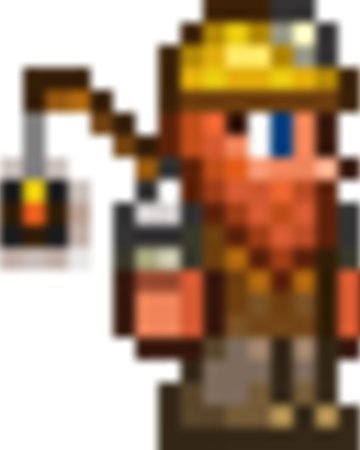

El Demoledor es un NPC que ocupará una casa vacía. Llegará cuando obtengas una dinamitas o Bomba por primera vez y tengas una o más casas disponibles. Si se tienen Explosivos en un cofre no vendrá, ya que se necesitan en el inventario.
Le gusta vivir en el subsuelo, hacer esto hará que baje los precios de compra de sus objetos
El demoledor |
|
 |
|
Estadisticas |
|
Tipo |
NPC |
Salud |
250 |
Arma |
Granada |
Defensa |
15 |
Especialidad |
Vende explosivos |
Bestiario |
|
Descripcion |
Trata cuidadosamente estando cerca de este enano. El Demoledor es un fánatico explosivo y vende cosas peligrosas que hacen "¡Boom!" |
Bioma preferido |
El subsuelo |
IDs internas |
|
ID de bestiario |
38 |
ID de NPC |
4 |
Cuando hay Luna de Sangre:
Cuando hay Fiesta:
Durante el evento Ejército del Antiguo:
| Objeto | Precio | Disponibilidad |
|---|---|---|
| Granada | 75 |
Siempre disponible |
| Bomba | 3 |
Siempre disponible |
| Dinamita | 20 |
Siempre disponible |
| Flecha de fuego infernal | 1 |
Después de derrotar al Muro carnoso |
| Polvareda explosiva | 12 |
Después de derrotar al Muro carnoso |
| Mina antipersonal | 5 |
Después de derrotar a Plantera y una Invasión pirata |
| Vela romana | 5 |
Durante Navidad |
| Proyectil Stynger | 10 |
Después de derrotar al Gólem |